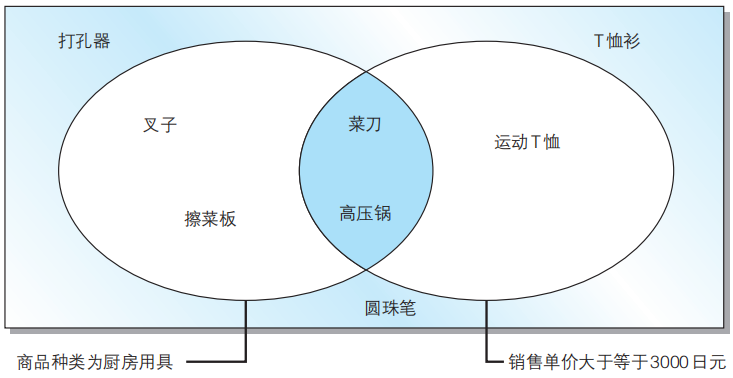
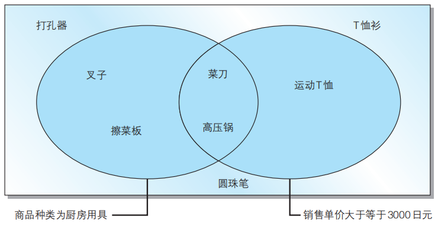
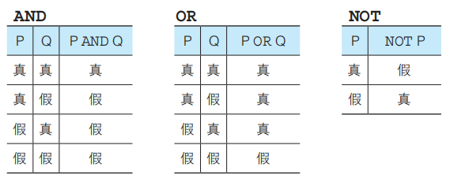
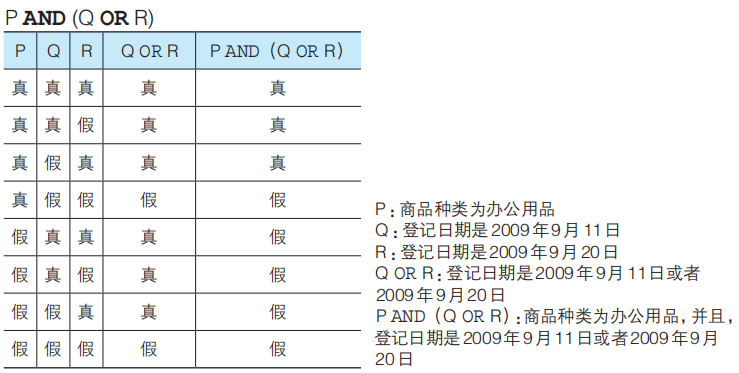
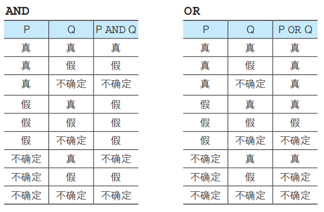
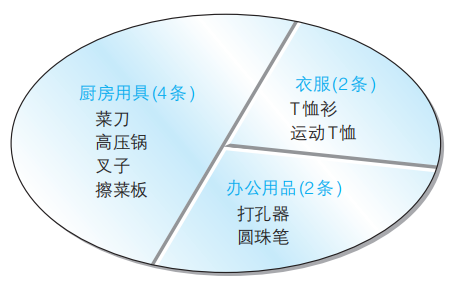
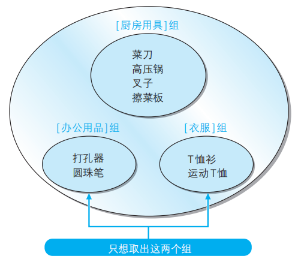
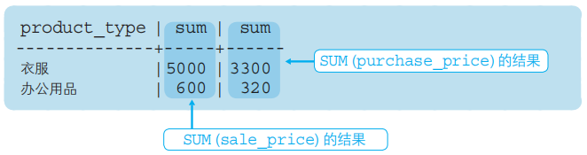
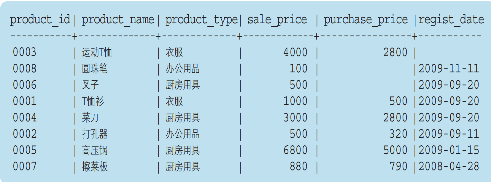

2.1 SELECT语句基础
2.1.1 从表中选取数据
SELECT语句
从表中选取数据时需要使用SELECT语句，也就是只从表中选出（SELECT）必要数据的意思。通过SELECT语句查询并选取出必要数据的过程称为匹配查询或查询（query）。
基本SELECT语句包含了SELECT和FROM两个子句（clause）。示例如下：
SELECT <列名>,
FROM <表名>;
其中，SELECT子句中列举了希望从表中查询出的列的名称，而FROM子句则指定了选取出数据的表的名称。
2.1.2 从表中选取符合条件的数据
WHERE语句
当不需要取出全部数据，而是选取出满足“商品种类为衣服”“销售单价在1000日元以上”等某些条件的数据时，使用WHERE语句。
SELECT 语句通过WHERE子句来指定查询数据的条件。在WHERE 子句中可以指定“某一列的值和这个字符串相等”或者“某一列的值大于这个数字”等条件。执行含有这些条件的SELECT语句，就可以查询出只符合该条件的记录了。
SELECT <列名>, ……
FROM <表名>
WHERE <条件表达式>;
比较下面两者输出结果的不同：
-- 用来选取product type列为衣服’的记录的SELECT语句
SELECT product_name, product_type
FROM product
WHERE product_type = '衣服';
-- 也可以选取出不是查询条件的列（条件列与输出列不同）
SELECT product_name
FROM product
WHERE product_type = '衣服';
##
2.1.3 相关法则
星号（）代表全部列的意思。- SQL中可以随意使用换行符，不影响语句执行（但不可插入空行）。
- 设定汉语别名时需要使用双引号（"）括起来。
- 在SELECT语句中使用DISTINCT可以删除重复行。
-- 想要查询出全部列时，可以使用代表所有列的星号（*）。
SELECT *
FROM <表名>；
-- SQL语句可以使用AS关键字为列设定别名（用中文时需要双引号（“”））。
SELECT product_id As id,
product_name As name,
purchase_price AS "进货单价"
FROM product;
-- 使用DISTINCT删除product_type列中重复的数据
SELECT DISTINCT product_type
FROM product;
#
2.2 算术运算符和比较运算符
2.2.1 算术运算符
SQL语句中可以使用的四则运算的主要运算符如下：
| 含义 | 运算符 |
|---|---|
| 加法 | + |
| 减法 | - |
| 乘法 | * |
| 除法 | / |
##
2.2.2 比较运算符
-- 选取出sale_price列为500的记录
SELECT product_name, product_type
FROM product
WHERE sale_price = 500;
SQL常见比较运算符如下：
| 运算符 | 含义 |
|---|---|
| = | 和~相等 |
| <> | 和~不相等 |
| >= | 大于等于~ |
| > | 大于~ |
| <= | 小于等于~ |
| < | 小于~ |
##
2.2.3 常用法则
- SELECT子句中可以使用常数或者表达式。
- 使用比较运算符时一定要注意不等号和等号的位置。
- 字符串类型的数据原则上按照字典顺序进行排序，不能与数字的大小顺序混淆。
- 希望选取NULL记录时，需要在条件表达式中使用IS NULL运算符。希望选取不是NULL的记录时，需要在条件表达式中使用IS NOT NULL运算符。
相关代码如下：
-- SQL语句中也可以使用运算表达式
SELECT product_name, sale_price, sale_price * 2 AS "sale_price x2"
FROM product;
-- WHERE子句的条件表达式中也可以使用计算表达式
SELECT product_name, sale_price, purchase_price
FROM product
WHERE sale_price-purchase_price >= 500;
/* 对字符串使用不等号
首先创建chars并插入数据
选取出大于‘2’的SELECT语句*/
-- DDL：创建表
CREATE TABLE chars
（chr CHAR（3）NOT NULL,
PRIMARY KEY（chr））;
-- 选取出大于'2'的数据的SELECT语句('2'为字符串)
SELECT chr
FROM chars
WHERE chr > '2';
-- 选取NULL的记录
SELECT product_name, purchase_price
FROM product
WHERE purchase_price IS NULL;
-- 选取不为NULL的记录
SELECT product_name, purchase_price
FROM product
WHERE purchase_price IS NOT NULL;
#
2.3 逻辑运算符
2.3.1 NOT运算符
想要表示“不是……”时，除了前文的<>运算符外，还存在另外一个表示否定、使用范围更广的运算符：NOT。
NOT不能单独使用，如下例：
-- 选取出销售单价大于等于1000日元的记录
SELECT product_name, product_type, sale_price
FROM product
WHERE sale_price >= 1000;
-- 向代码清单2-30的查询条件中添加NOT运算符
SELECT product_name, product_type, sale_price
FROM product
WHERE NOT sale_price >= 1000;
##
2.3.2 AND运算符和OR运算符
当希望同时使用多个查询条件时，可以使用AND或者OR运算符。
AND 相当于“并且”，类似数学中的取交集；
OR 相当于“或者”，类似数学中的取并集。
如下图所示：
AND运算符工作效果图

OR运算符工作效果图

通过括号优先处理
如果要查找这样一个商品，该怎么处理？
>“商品种类为办公用品”并且“登记日期是 2009 年 9 月 11 日或者 2009 年 9 月 20 日”
>理想结果为“打孔器”，但当你输入以下信息时，会得到错误结果
-- 将查询条件原封不动地写入条件表达式，会得到错误结果
SELECT product_name, product_type, regist_date
FROM product
WHERE product_type = '办公用品'
AND regist_date = '2009-09-11'
OR regist_date = '2009-09-20';
错误的原因是是 AND 运算符优先于 OR 运算符，想要优先执行OR运算，可以使用括号：
-- 通过使用括号让OR运算符先于AND运算符执行
SELECT product_name, product_type, regist_date
FROM product
WHERE product_type = '办公用品'
AND ( regist_date = '2009-09-11'
OR regist_date = '2009-09-20');
##
2.3.3 真值表
复杂运算时该怎样理解？
当碰到条件较复杂的语句时，理解语句含义并不容易，这时可以采用真值表来梳理逻辑关系。
什么是真值？
本节介绍的三个运算符 NOT、AND 和 OR 称为逻辑运算符。这里所说的逻辑就是对真值进行操作的意思。真值就是值为真（TRUE）或假 （FALSE）其中之一的值。
例如，对于 sale_price >= 3000 这个查询条件来说，由于 product_name 列为 '运动 T 恤' 的记录的 sale_price 列的值是 2800，因此会返回假（FALSE），而 product_name 列为 '高压锅' 的记录的sale_price 列的值是 5000，所以返回真（TRUE）。
AND 运算符两侧的真值都为真时返回真，除此之外都返回假。 OR 运算符两侧的真值只要有一个不为假就返回真，只有当其两侧的真值都为假时才返回假。 NOT运算符只是单纯的将真转换为假，将假转换为真。真值表

查询条件为P AND（Q OR R）的真值表

含有NULL时的真值
NULL的真值结果既不为真，也不为假，因为并不知道这样一个值。
那该如何表示呢？
这时真值是除真假之外的第三种值——不确定（UNKNOWN）。一般的逻辑运算并不存在这第三种值。SQL 之外的语言也基本上只使用真和假这两种真值。与通常的逻辑运算被称为二值逻辑相对，只有 SQL 中的逻辑运算被称为三值逻辑。
三值逻辑下的AND和OR真值表为：

##
练习题-第一部分
2.1
编写一条SQL语句，从product（商品）表中选取出“登记日期（regist在2009年4月28日之后”的商品，查询结果要包含product name和regist_date两列。
###
2.2
请说出对product 表执行如下3条SELECT语句时的返回结果。
①
SELECT *
FROM product
WHERE purchase_price = NULL;
②
SELECT *
FROM product
WHERE purchase_price <> NULL;
③
SELECT *
FROM product
WHERE product_name > NULL;
###
2.3
代码清单2-22（2-2节）中的SELECT语句能够从product表中取出“销售单价（saleprice）比进货单价（purchase price）高出500日元以上”的商品。请写出两条可以得到相同结果的SELECT语句。执行结果如下所示。
product_name | sale_price | purchase_price
-------------+------------+------------
T恤衫 | 1000 | 500
运动T恤 | 4000 | 2800
高压锅 | 6800 | 5000
###
2.4
请写出一条SELECT语句，从product表中选取出满足“销售单价打九折之后利润高于100日元的办公用品和厨房用具”条件的记录。查询结果要包括product_name列、product_type列以及销售单价打九折之后的利润（别名设定为profit）。
提示：销售单价打九折，可以通过saleprice列的值乘以0.9获得，利润可以通过该值减去purchase_price列的值获得。
2.4 对表进行聚合查询
2.4.1 聚合函数
SQL中用于汇总的函数叫做聚合函数。以下五个是最常用的聚合函数：
- COUNT：计算表中的记录数（行数）
- SUM：计算表中数值列中数据的合计值
- AVG：计算表中数值列中数据的平均值
- MAX：求出表中任意列中数据的最大值
- MIN：求出表中任意列中数据的最小值
请沿用第一章的数据，使用以下操作熟练函数：
-- 计算全部数据的行数（包含NULL）
SELECT COUNT(*)
FROM product;
-- 计算NULL以外数据的行数
SELECT COUNT(purchase_price)
FROM product;
-- 计算销售单价和进货单价的合计值
SELECT SUM(sale_price), SUM(purchase_price)
FROM product;
-- 计算销售单价和进货单价的平均值
SELECT AVG(sale_price), AVG(purchase_price)
FROM product;
-- MAX和MIN也可用于非数值型数据
SELECT MAX(regist_date), MIN(regist_date)
FROM product;
###
使用聚合函数删除重复值
-- 计算去除重复数据后的数据行数
SELECT COUNT(DISTINCT product_type)
FROM product;
-- 是否使用DISTINCT时的动作差异（SUM函数）
SELECT SUM(sale_price), SUM(DISTINCT sale_price)
FROM product;
##
2.4.2 常用法则
COUNT函数的结果根据参数的不同而不同。COUNT()会得到包含NULL的数据行数，而COUNT(<列名>)会得到NULL之外的数据行数。 聚合函数会将NULL排除在外。但COUNT()例外，并不会排除NULL。- MAX/MIN函数几乎适用于所有数据类型的列。SUM/AVG函数只适用于数值类型的列。
- 想要计算值的种类时，可以在COUNT函数的参数中使用DISTINCT。
- 在聚合函数的参数中使用DISTINCT，可以删除重复数据。
#
2.5 对表进行分组
2.5.1 GROUP BY语句
之前使用聚合函数都是会整个表的数据进行处理，当你想将进行分组汇总时（即：将现有的数据按照某列来汇总统计），GROUP BY可以帮助你：
SELECT <列名1>,<列名2>, <列名3>, ……
FROM <表名>
GROUP BY <列名1>, <列名2>, <列名3>, ……;
看一看是否使用GROUP BY语句的差异：
-- 按照商品种类统计数据行数
SELECT product_type, COUNT(*)
FROM product
GROUP BY product_type;
-- 不含GROUP BY
SELECT product_type, COUNT(*)
FROM product
按照商品种类对表进行切分

这样，GROUP BY 子句就像切蛋糕那样将表进行了分组。在 GROUP BY 子句中指定的列称为聚合键或者分组列。
###
聚合键中包含NULL时
将进货单价（purchase_price）作为聚合键举例：
SELECT purchase_price, COUNT(*)
FROM product
GROUP BY purchase_price;
此时会将NULL作为一组特殊数据进行处理
###
GROUP BY书写位置
GROUP BY的子句书写顺序有严格要求，不按要求会导致SQL无法正常执行，目前出现过的子句顺序为：
1 SELECT → 2. FROM → 3. WHERE → 4. GROUP BY
其中前三项用于筛选数据，GROUP BY对筛选出的数据进行处理
###
在WHERE子句中使用GROUP BY
SELECT purchase_price, COUNT(*)
FROM product
WHERE product_type = '衣服'
GROUP BY purchase_price;
##
2.5.2 常见错误
在使用聚合函数及GROUP BY子句时，经常出现的错误有：
1. 在聚合函数的SELECT子句中写了聚合健以外的列 使用COUNT等聚合函数时，SELECT子句中如果出现列名，只能是GROUP BY子句中指定的列名（也就是聚合键）。
2. 在GROUP BY子句中使用列的别名 SELECT子句中可以通过AS来指定别名，但在GROUP BY中不能使用别名。因为在DBMS中 ,SELECT子句在GROUP BY子句后执行。
3. 在WHERE中使用聚合函数 原因是聚合函数的使用前提是结果集已经确定，而WHERE还处于确定结果集的过程中，所以相互矛盾会引发错误。 如果想指定条件，可以在SELECT，HAVING（下面马上会讲）以及ORDER BY子句中使用聚合函数。
#
2.6 为聚合结果指定条件
2.6.1 用HAVING得到特定分组
将表使用GROUP BY分组后，怎样才能只取出其中两组？

这里WHERE不可行，因为，WHERE子句只能指定记录（行）的条件，而不能用来指定组的条件（例如，“数据行数为 2 行”或者“平均值为 500”等）。
可以在GROUP BY后使用HAVING子句。
HAVING的用法类似WHERE
##
2.6.2 HAVING特点
HAVING子句用于对分组进行过滤，可以使用数字、聚合函数和GROUP BY中指定的列名（聚合键）。
-- 数字
SELECT product_type, COUNT(*)
FROM product
GROUP BY product_type
HAVING COUNT(*) = 2;
-- 错误形式（因为product_name不包含在GROUP BY聚合键中）
SELECT product_type, COUNT(*)
FROM product
GROUP BY product_type
HAVING product_name = '圆珠笔';
#
2.7 对查询结果进行排序
2.7.1 ORDER BY
SQL中的执行结果是随机排列的，当需要按照特定顺序排序时，可已使用ORDER BY子句。
SELECT <列名1>, <列名2>, <列名3>, ……
FROM <表名>
ORDER BY <排序基准列1>, <排序基准列2>, ……
默认为升序排列，降序排列为DESC
-- 降序排列
SELECT product_id, product_name, sale_price, purchase_price
FROM product
ORDER BY sale_price DESC;
-- 多个排序键
SELECT product_id, product_name, sale_price, purchase_price
FROM product
ORDER BY sale_price, product_id;
-- 当用于排序的列名中含有NULL时，NULL会在开头或末尾进行汇总。
SELECT product_id, product_name, sale_price, purchase_price
FROM product
ORDER BY purchase_price;
##
2.7.2 ORDER BY中列名可使用别名
前文讲GROUP BY中提到，GROUP BY 子句中不能使用SELECT 子句中定义的别名，但是在 ORDER BY 子句中却可以使用别名。为什么在GROUP BY中不可以而在ORDER BY中可以呢？
这是因为SQL在使用 HAVING 子句时 SELECT 语句的顺序为：
FROM → WHERE → GROUP BY → HAVING → SELECT → ORDER BY。
其中SELECT的执行顺序在 GROUP BY 子句之后，ORDER BY 子句之前。也就是说，当在ORDER BY中使用别名时，已经知道了SELECT设置的别名存在，但是在GROUP BY中使用别名时还不知道别名的存在，所以不能在ORDER BY中可以使用别名，但是在GROUP BY中不能使用别名
##
练习题-第二部分
2.5
请指出下述SELECT语句中所有的语法错误。
SELECT product_id, SUM（product_name）
--本SELECT语句中存在错误。
FROM product
GROUP BY product_type
WHERE regist_date > '2009-09-01';
2.6
请编写一条SELECT语句，求出销售单价（ sale_price 列）合计值大于进货单价（ purchase_price 列）合计值1.5倍的商品种类。执行结果如下所示。
product_type | sum | sum
-------------+------+------
衣服 | 5000 | 3300
办公用品 | 600 | 320

2.7
此前我们曾经使用SELECT语句选取出了product（商品）表中的全部记录。当时我们使用了ORDERBY子句来指定排列顺序，但现在已经无法记起当时如何指定的了。请根据下列执行结果，思考ORDERBY子句的内容。
